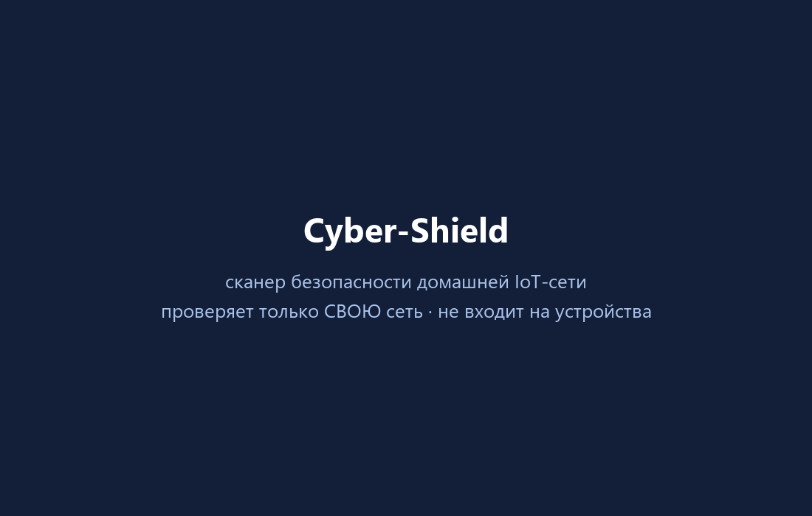
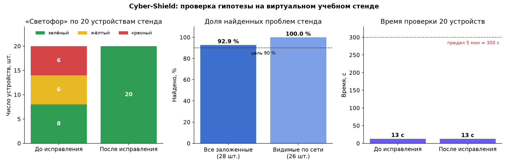
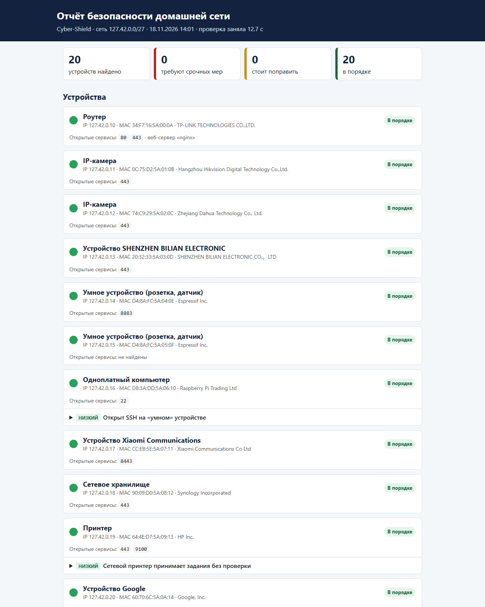

Демо

Результаты на учебном стенде (20 виртуальных устройств)
92,9 %
найдено заложенных проблем (26 из 28), цель ≥ 90 %12 с
проверка 20 устройств, цель < 5 мин20 / 20
устройств «зелёные» после исправления
Стенд виртуальный (эмулятор сервисов на этом же компьютере). Проверка на реальном оборудовании и на пользователях без технической подготовки ещё впереди.
Как выглядит отчёт


Открыть пример отчёта целиком (адреса условные, стенд).
Как это работает
- Определяет свою подсеть и отказывает для чужих и публичных адресов.
- Находит устройства, открытые сервисы и производителя по MAC.
- Сверяет с базой из 28 рисков со ссылками на CVE, БДУ ФСТЭК и OWASP.
- Делает HTML-отчёт: «светофор» и пошаговые советы простым языком.